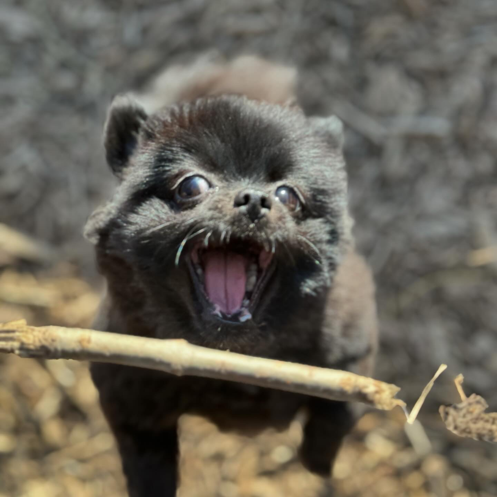

Hi! My Name Is Coco
I am Coco, a canine professional with a distinguished lineage. I was born and raised in the serene countryside of Waterloo and the vibrant metropolis of Toronto. I am widely recognized as an exceptionally talented and charming and endearing member of my canine family. My presence and familiarity invariably commands attention and admiration from all who encounter me.
I am fortunate to have two siblings, Prince and Hazel, with whom I share a close bond. However, I occasionally find myself the target of their playful teasing due to my diminutive size and my love for my family. I am especially fond of the beach and irresistible charm.
Despite these moments of sibling rivalry, I cherish the time we spend together, and I am always looking forward to seeing both within the confines of our home and in the great outdoors.

As for my personal interests and hobbies, I must confess to a deep appreciation of the many pursuits I enjoy for slumber. Additionally, I derive great pleasure from engaging in playful pursuits with my sibling, Hazel, particularly when we find ourselves in the stimulating environment of a dog park.